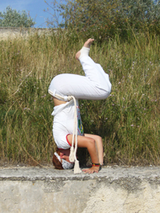

{спустя полгода}
Прошло ровно полгода, как я занялась капоэйрой. Долго думала в свое время — вот мол пройдет хотя бы полгода, точно появятся мысли на тему «как было и что стало» (вспомнились такие книжечки, которые я обожала с родителями привозить из греции, кипра и прочих мест с развалинами, там были странички, на которых была сфотографирована та или иная достопримечательность в нынешнем виде, а сверху была прозрачная пленка, на которой как бы „дорисовывались“ остальные части и здания показывалось в его первоначальном виде). Но я поняла, что жизнь в капоэйре для меня потекла уже настолько интенсивно, что я вообще не успеваю замечать, как и что меняется.
Мне кажется я вообще только вот вчера залезла в википедию и набрала это странное для меня тогда слово «капоэйра», чтобы попытаться абстрагироваться от всех этих многочисленных стебных шуточек в фильмах и мультиках, что мол так себе это занятие, в основном смех один, и разобраться-таки, может это что-то по-настоящему увлекательное. И вроде вот только вчера или позавчера прошло мое первое занятие в школе со форса, а вроде и нет. С того момента прошло сколько-то соревнований, в которых я принимала участие, прошло батизадо, прошли сборы… Я уже успела поменять свое мнение из крайности в крайность 20 тысяч раз.
Целых 6 месяцев я уже почти привыкаю к моему новому занятию.
И уж анголой-то я и правда будто только вчера пришла заниматься — попала совершенно случайно в группу фика, побывала на семинаре с Местре Кобра Манса, побывала на туче разных открытых род, стала постоянно проводить свое воскресенье на уличной роде под мостом, выучила порядка 100 (если быть точной, 78) корриду, порядка 15-20 ладаиньй, приобрела свой беримбау, научилась его натягивать, приучила свой мизинец к длительной игре всевозможных ритмов. Сплела кашиши :) Отпраздновала свой день рождения целым часом игры в кругу без остановки (было оооочень тяжело, но зато весело.
и вот теперь уже действительно буквально недели не прошло, я приняла решение между двумя школами и перешла в группу капоэйры ангола насовсем :)
На самом деле, если не брать в расчет то, что я делала, а задуматься больше о том, что у меня в голове, то это тоже две большие разницы. Помнится, начинала я свое отношение к капоэйре с любви к акробатике. «Гимнасткой мне не стать, а вот капоэйристы вон как прыгают, почти вот точно также! Пойду-ка я к мечте более долгим путем…» — думалось мне. И с мыслью о мечте летать как гимнасты, я занималась первые 2 месяца где-то. А потом это постепенно начало сходить на нет и потом и вовсе исчезло.
А еще я долго не могла перестроиться со своим дурацким спортивным подходом, который всякие странные дядьки с длинными волосами или дредами или чем-то еще таким эдаким все вокруг так и жаждали покритиковать, толкуя мне „капоэйра это не теннис, ты играешь не против кого-то, а вместе с кем-то“ — а я мотала головой и говорила про себя: «Ну как же, дудки! Есть два человека, один по-любому проигрывает…» — особенно смешно мне самой от себя стало когда мы разбирали игру чику-чику.
Имах долго пытался мне втолковать: «Прежде всего надо играть, а уже потом ловить» — мне было сложно к этому адаптироваться. Мозг спортсмена, ну или если быть точнее, конкретно мой мозг после игровых видов спорта почему-то имеет такой шаблон: если говорят, что надо что-то поймать, надо ловить. И чем быстрее и ловчее, тем лучше. В итоге я и кружила как оса над этим мешочком в центре круга, дабы соперника не подпустить и при первой же удобной возможности хватала… „Ведь получается же! Чего вы на меня смотрите так странно?“ — возмущалась я про себя. Наверное со стороны выглядело это крайне комично, как мне было сказано, я вела круговую оборону постоянную. А вот этих туманных «надо создать красоту» и тд и тп я вообще не понимала. Да и сейчас до сих пор с этим тяжело. Но по крайней мере я уже перестала этому противиться и хоть примерно представляю себе, к чему надо стремиться. И буду по-тихоньку.
В общем, эти 6 месяцев пролетели так незаметно, что я… как это не комично звучит, даже и не заметила… :)
P. S. А еще иногда задумываюсь и даже улыбает: я ведь музыкант по будущей профессии. В моей жизни всегда были два главных увлечения это спорт и музыка. И раньше они всегда шли параллельно, совершенно не касаясь друг друга. А тут вдруг бац и сошлось. Это невероятно, как будто специально для меня. Думаю все, кто меня знают, видели, как сильно меня прет от музыки и песен капоэйры :) Кстати, они повлияли и на мою профессиональную деятельность, как именно пока не скажу, потому что боюсь сглазить…)
P. P. S. Ах да и еще заработала себе от своего тренера апелиду Кучия :)))